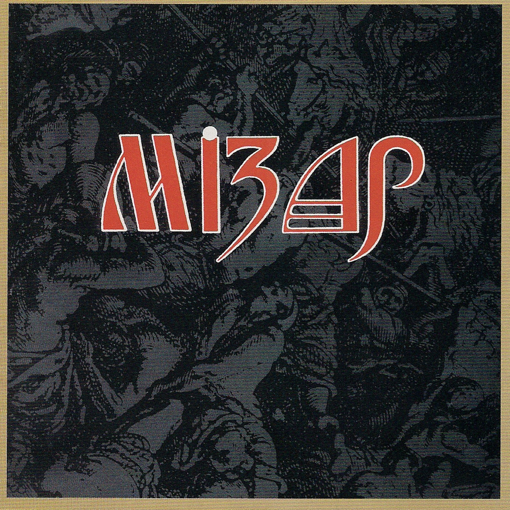
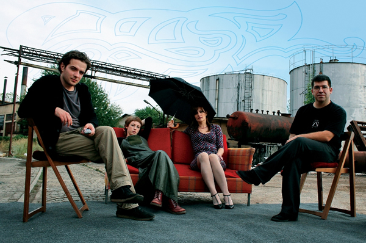
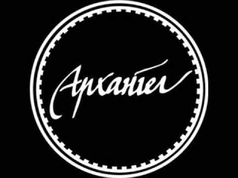
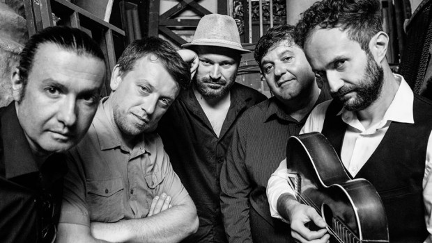
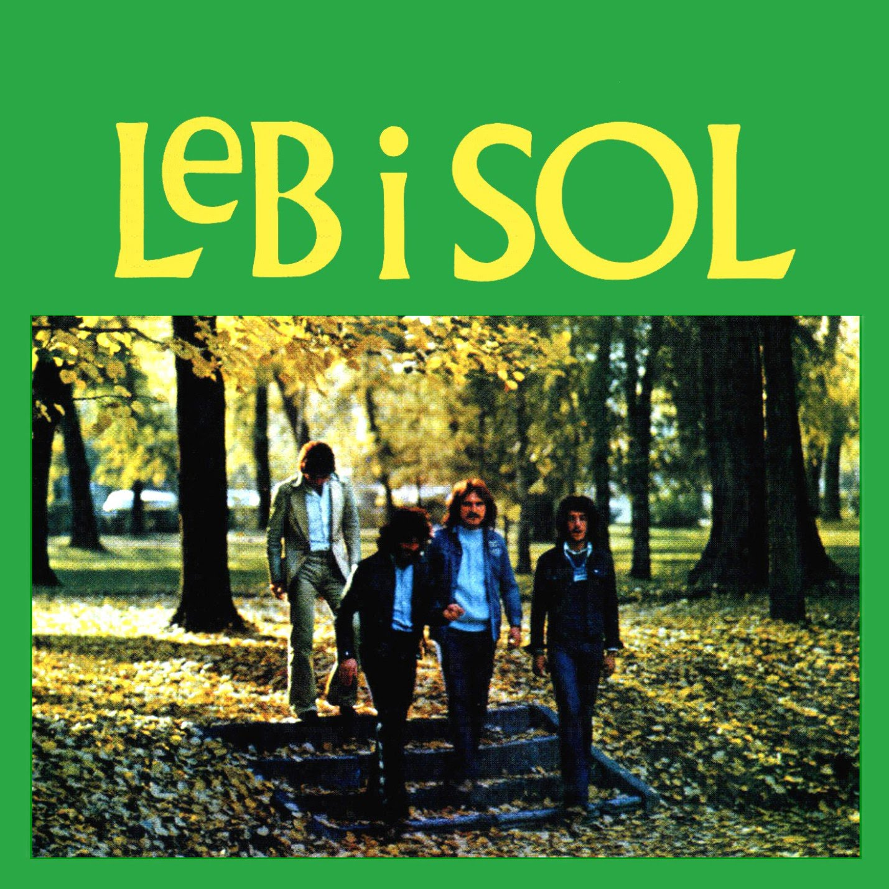

Some of the best Alternative Macedonian bands include:
Mizar

Mizar is a Macedonian rock band from Skopje. They achieved a status of a cult band, especially in Macedonia and across the Western Balkans.Mizar was formed in 1981 in the then Socialist Republic of Macedonia. Because of the band's avant-garde sound and image, its Christian leanings and support for Macedonian self-determination, they were viewed with certain degree of suspicion by the former authorities. Still, the group received great media attention including numerous appearances on the national television.
You can check them out on: Youtube
String Forces

String Forces is a Macedonian band formed in 1995 in Skopje.Since then, the band has released 5 albums and a lots of concerts around the Balkans. You can listen the bands' new album on: Bandcamp
Arhangel

Arhangel is a Macedonian alternative rock band formed in 1989. The frontman is Risto Vrtev who has also been part of such rock bands as Mizar and Inola X. The original line-up is: Risto Vrtev, Dragan Ginovski, Panta Džambazoski, Dejan Argirovski. Arhangel has released five albums which have been met with both critical and commercial success. The band's sound is both muscular and melodic at the same time, echoing post-punk icons such as the English The Smiths and the Serbian Ekaterina Velika, while the band's lyrical inspirations focus is on the country's political and cultural changes during the 1990s. You can check the band on: Youtube
Foltin

Foltin is one of the most important Macedonian bands and has existed since 1995. Foltin's music is hard to define, sounds unpredictable and challenging: surreal, passionate and witty, dynamic and full of surprises, blending many different music genres: Electro acoustic, Alternative rock, Funk, Bossa Nova, Ambient etc. Even though they use standard musical elements, their approach in creating the atmosphere is unpredictable and above all, original. You can listen the band for free on: Youtube
Leb i sol

Leb i sol is a Macedonian rock group founded in the 1970s by Vlatko Stefanovski, Bodan Arsovski, Nikola Kokan Dimuševski and Garabet Tavitjan. Beside being the most eminent Macedonian band, they were also one of the most important acts of the former Yugoslav Rock scene. "Leb i sol" is a traditional greeting which literally translates to "bread and salt". It is often used as an expression of spite or determination; e.g. "I will eat bread and salt if I have to, but I will not give in!". More commonly, distinguished visitors to villages and communities would be offered a piece of home-baked bread and a dip of salt as a traditional welcome, which is where the name of the band really came from. Their music combined elements of rock, jazz fusion and ethnic Macedonian music. You can listen this band on: Youtube